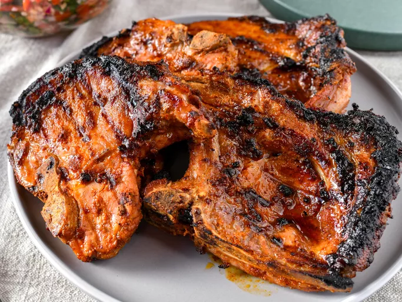

Return to homepage
Smoky Grilled Pork Chops

Photo by Allrecipes/Kim Shupe
Description
Smoky grilled pork chops flavored with a homemade seasoning. A classic in families barbecue.
Ingredients
- 1 tablespoon seasoned salt
- 1 tablespoon garlic powder
- 1 tablespoon onion powder
- 1 tablespoon ground paprika
- 2 teaspoons Worcestershire sauce
- 1 teaspoon ground black pepper
- 1 teaspoon liquid smoke flavoring
- 4 bone-in pork chops (½- to ¾-inch thick)
Steps
- Gather all ingredients. Preheat an outdoor grill for indirect cooking over medium heat and lightly oil the grate.
- To make the wet spice rub: Mix seasoned salt, garlic powder, onion powder, paprika, Worcestershire sauce, pepper, and liquid smoke together in a small bowl until thoroughly combined.
- Massage spice rub on both sides of pork chops; let stand for 10 minutes.
- Cook chops on the preheated grill over indirect heat until no longer pink inside, about 12 minutes per side. An instant-read thermometer should read at least 145 degrees F (63 degrees C).
- Let stand for 10 minutes before serving.
Recipe by Allrecipes